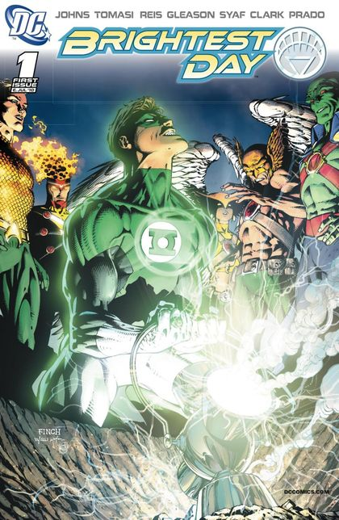

Reading Guide · Mainstream comics
Brightest Day
Two connected books share a name. Choose the aftermath you want to follow.

2010–2011
Central series: Brightest Day #0–24
Lantern continuation: Green Lantern (2005) #53–62
Read first: Blackest Night. The premise below reveals its resurrection aftermath, but keeps the ending of Brightest Day unrevealed.
The central series: why were they brought back?
Brightest Day #0–24 follows the people restored to life after Blackest Night. Its cast extends well beyond the Corps: Deadman, Aquaman, Martian Manhunter, Firestorm, Hawkman, and Hawkgirl are central to the mystery. Their return is the beginning of a new obligation, not a simple reset to their old lives.
The writers are Geoff Johns and Peter J. Tomasi, with an ensemble art team including Ivan Reis, Patrick Gleason, Ardian Syaf, Scott Clark, and Joe Prado. DC's omnibus listing identifies the creative team and collects the full #0–24 series.
The white light connects these characters, but this is not principally a Hal Jordan/Sinestro adventure. Read it for the White Lantern mystery and the wider DC aftermath. Deadman's search, Firestorm's uneasy partnership, and Martian Manhunter's return to Mars give the event several different personal stakes.
The Lantern book: the uneasy spectrum alliance
Green Lantern: Brightest Day is a different collection: Green Lantern (2005) #53–62, written by Geoff Johns with art led by Doug Mahnke. Hal, Sinestro, Carol Ferris, Saint Walker, Atrocitus, Indigo-1, and Larfleeze must cooperate after fighting the Black Lanterns. Their conflicting loyalties turn the spectrum's cosmic questions into an unstable working alliance.
DC labels #53 a Brightest Day tie-in; the collection listing confirms #53–62. Its “New Guardians” arc title should not be confused with Kyle's separate Green Lantern: New Guardians series launched in 2011.
Which route should I read?
Following Geoff Johns' Green Lantern run
Core route: Blackest Night → Green Lantern #53–62 → War of the Green Lanterns. The central Brightest Day series is an optional companion for this focused route, rather than a replacement for the ten Lantern issues.
Following the white light and the resurrected cast
Core route: Blackest Night → Brightest Day #0–24. Read the central series to resolve its own mystery. The Lantern collection adds the Corps' perspective; it does not contain the central series.
These essential/optional labels are this site's reading advice, based on which storyline you are following—not a publisher-mandated reading order.
Check the contents before choosing an edition
- Brightest Day Vol. 1: #0–7.
- Brightest Day Vol. 2: #8–16.
- Brightest Day Vol. 3: #17–24.
- Brightest Day Omnibus: the same central #0–24 series.
- Green Lantern: Brightest Day: Green Lantern #53–62.
Sources: DC's linked issue and collected-edition listings. Contents reviewed November 4, 2026; edition availability can vary. Brightest Day #1 cover credits.
Artwork credits (1 image)
Credits refer to the illustrations shown here. Open a record for sources, adaptations and unresolved details. Some artwork and source pages contain story spoilers.
- Brightest Day — Brightest Day (2010) #1 — main cover. David Finch (cover pencils); Scott Williams (cover inks); Peter Steigerwald (cover colors).